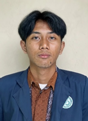

Muhamad
Soleh Sulaeman
Mahasiswa Teknologi Rekayasa Perangkat Lunak
+62 851-2329-6071
muhamadsolehs871@gmail.com
LinkedIn
GitHub
Jalan Dukuh 2 RT 45 RW 08,
Sukamelang, Subang, Jawa Barat
muhamadsolehs871@gmail.com
GitHub
Jalan Dukuh 2 RT 45 RW 08,
Sukamelang, Subang, Jawa Barat
Tentang Saya
Mahasiswa Teknologi Rekayasa Perangkat Lunak yang memiliki minat besar dalam bidang pemrograman dan teknologi. Memiliki pemahaman dasar dalam pengembangan perangkat lunak, analisis sistem, dan pemecahan masalah berbasis teknologi. Berorientasi pada detail, mampu bekerja dalam tim, serta terus belajar untuk mengembangkan keterampilan di dunia digital.
Pendidikan
Politeknik Negeri Subang
2023 - Sekarang
IPK terakhir 3.50SMK Negeri 1 Subang
Teknik Komputer dan Jaringan
2023 - Sekarang
IPK terakhir 3.50SMK Negeri 1 Subang
Teknik Komputer dan Jaringan
IRMA Al-Hidayah
Sekretaris Umum
LDK Uswatun Hasanah
Ketua Divisi Humas dan Media
Ketua Umum
Duta Jurusan TIK
Anggota
Satgas PPKPT
Anggota
Gebyar Ramadhan, PKKMB, MABIM, LATKOM TIK, Digital Festival
Panitia dan anggota
divisi
Kemampuan
LaravelReact JSReact NativeFlutterTailwind
CSSPHPJavaScriptHTML/CSSPostgreSQLMySQLPython